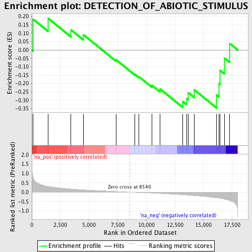
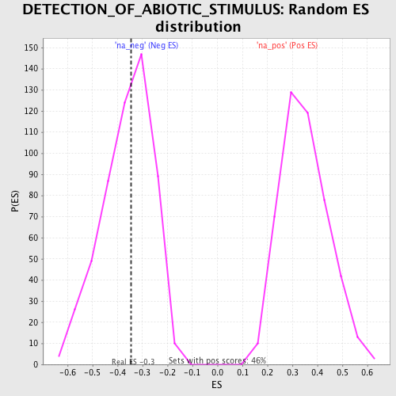

| | | Dataset | GSEA_Cushing_prerank_FC |
| Phenotype | NoPhenotypeAvailable |
| Upregulated in class | na_neg |
| GeneSet | DETECTION_OF_ABIOTIC_STIMULUS |
| Enrichment Score (ES) | -0.34665626 |
| Normalized Enrichment Score (NES) | -0.96211725 |
| Nominal p-value | 0.51119405 |
| FDR q-value | 0.98777527 |
| FWER p-Value | 1.0 |
Table: GSEA Results Summary

Fig 1: Enrichment plot: DETECTION_OF_ABIOTIC_STIMULUS
Profile of the Running ES Score & Positions of GeneSet Members on the Rank Ordered List
| PROBE | GENE SYMBOL | GENE_TITLE | RANK IN GENE LIST | RANK METRIC SCORE | RUNNING ES | CORE ENRICHMENT | | 1 | RP1 | | | 124 | 0.754 | 0.1829 | No |
| 2 | CACNA1F | | | 1408 | 0.310 | 0.1895 | No |
| 3 | GRM6 | | | 3426 | 0.170 | 0.1200 | No |
| 4 | TIMELESS | | | 4522 | 0.125 | 0.0903 | No |
| 5 | RHO | | | 7356 | 0.036 | -0.0584 | No |
| 6 | TRPC3 | | | 9008 | -0.015 | -0.1466 | No |
| 7 | GRK1 | | | 9359 | -0.024 | -0.1600 | No |
| 8 | TAC1 | | | 10473 | -0.048 | -0.2100 | No |
| 9 | PITPNM1 | | | 11204 | -0.070 | -0.2330 | No |
| 10 | SAG | | | 13179 | -0.139 | -0.3079 | Yes |
| 11 | UNC119 | | | 13522 | -0.154 | -0.2881 | Yes |
| 12 | ABCA4 | | | 13674 | -0.161 | -0.2560 | Yes |
| 13 | PDC | | | 14200 | -0.185 | -0.2386 | Yes |
| 14 | OPN1SW | | | 16142 | -0.306 | -0.2696 | Yes |
| 15 | OPN4 | | | 16339 | -0.323 | -0.1992 | Yes |
| 16 | PDE6B | | | 16442 | -0.332 | -0.1213 | Yes |
| 17 | NPFFR2 | | | 16836 | -0.374 | -0.0491 | Yes |
| 18 | TACR1 | | | 17290 | -0.447 | 0.0382 | Yes |
Table: GSEA details [plain text format]

Fig 2: DETECTION_OF_ABIOTIC_STIMULUS: Random ES distribution
Gene set null distribution of ES for DETECTION_OF_ABIOTIC_STIMULUS